Code
library(MASS)
library(tidyverse)
library(broom)
library(jtools)
library(lmtest)
library(sjPlot)
library(sjmisc)DISCLAIMER: Saikat is an employee of GSK. The content, views and opinios expressed in this notebook and during the class are absolutely Saikat’s own, and by no way reflects the official stand of GSK on these matters.
library(MASS)
library(tidyverse)
library(broom)
library(jtools)
library(lmtest)
library(sjPlot)
library(sjmisc)Public Health England: Technical briefing 20
#Load the data
load(file = 'simpsons_paradox_covid.rda')
simpson_dat <- simpsons_paradox_covid %>%
mutate(age_group = as.factor(age_group)) %>%
mutate(vaccine_status = as.factor(vaccine_status)) %>%
mutate(outcome = as.factor(outcome))
# First model: death ~ vacination status
mod_simpson1 <- glm(outcome ~ vaccine_status,
family = "binomial", data = simpson_dat)
#Second model: adjusted for age: <50, >= 50
mod_simpson2 <- glm(outcome ~ vaccine_status +
age_group,
family = 'binomial', data = simpson_dat)
mod_simpson1_tidy <- broom::tidy(mod_simpson1)
mod_simpson2_tidy <- broom::tidy(mod_simpson2)
#plot the models
ggplot(mod_simpson1_tidy, aes(y = term, x= estimate)) +
geom_point(color = "darkred") +
geom_errorbar(aes(xmin = estimate - 1.96*std.error,
xmax = estimate + 1.96*std.error), width = 0.25,
color = 'black') +
labs(x = "\nCoefficient +/- CI", y = "", title = "First model: death ~ vacination status") +
geom_vline(xintercept = 0, color = "red", linetype = "dashed") +
scale_y_discrete(labels = c("Intercept", "\nVaccination \n Status")) +
theme_classic() +
theme(text = element_text(size = 15)) +
xlim(-2, 7)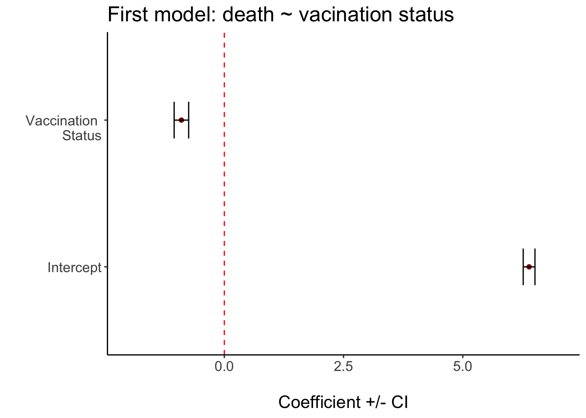
ggplot(mod_simpson2_tidy, aes(y = term, x= estimate)) +
geom_point(color = "darkred") +
geom_errorbar(aes(xmin = estimate - 1.96*std.error,
xmax = estimate + 1.96*std.error), width = 0.25,
color = 'black') +
labs(x = "\nCoefficient +/- CI", y = "", title = "Second model: adjusted for age: <50, >= 50") +
geom_vline(xintercept = 0, color = "red", linetype = "dashed") +
scale_y_discrete(labels = c("Intercept", "Age", "\nVaccination \n Status")) +
theme_classic() +
theme(text = element_text(size = 15)) +
xlim(-2, 7)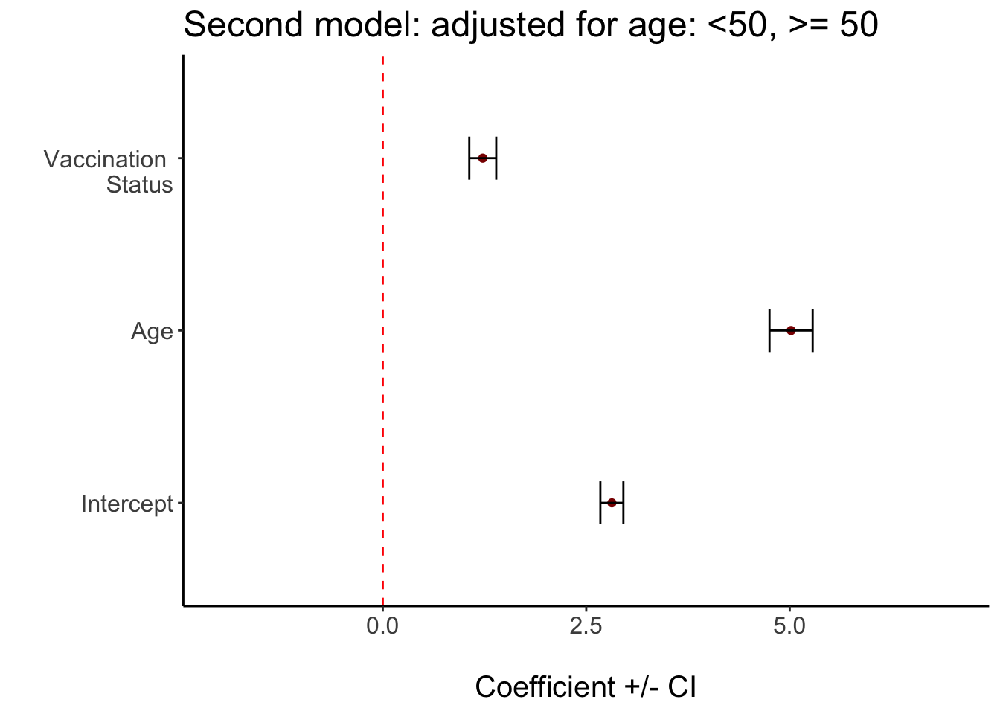
#Predicted vs observed plot
effect_plot(mod_simpson1, pred = vaccine_status, interval = TRUE,
cat.geom = 'line', y.label = 'prob(death)')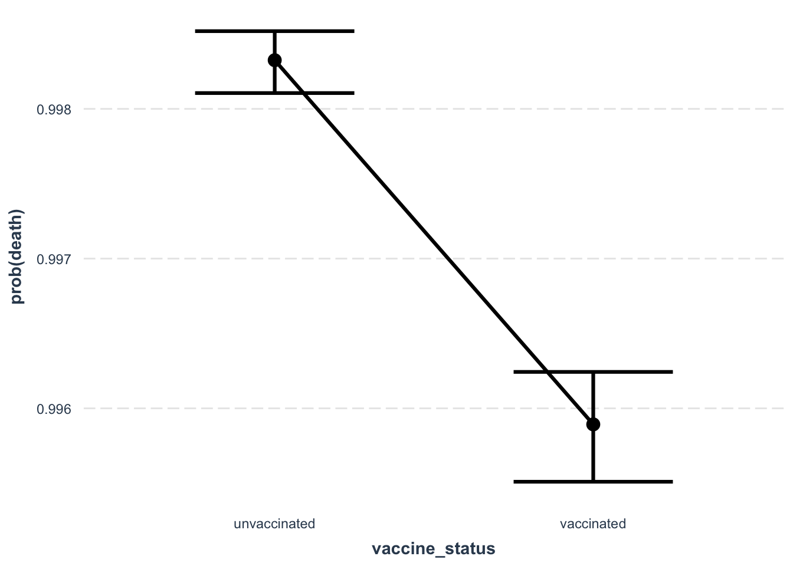
effect_plot(mod_simpson2, pred = vaccine_status, interval = TRUE,
cat.geom = 'line', y.label = 'prob(death)')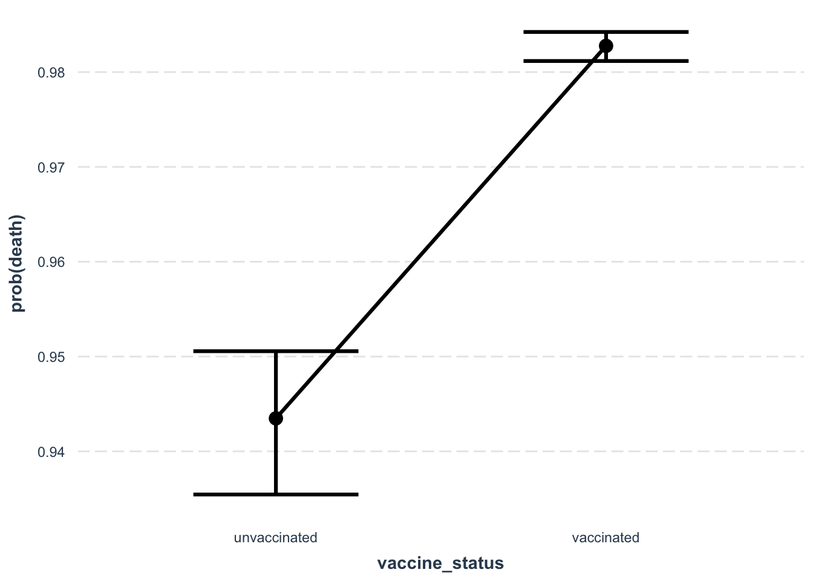
ggplot(simpson_dat, aes(y = predict(mod_simpson1, type = "response"), x= as.factor(vaccine_status))) +
geom_point() +
geom_line() +
theme_classic()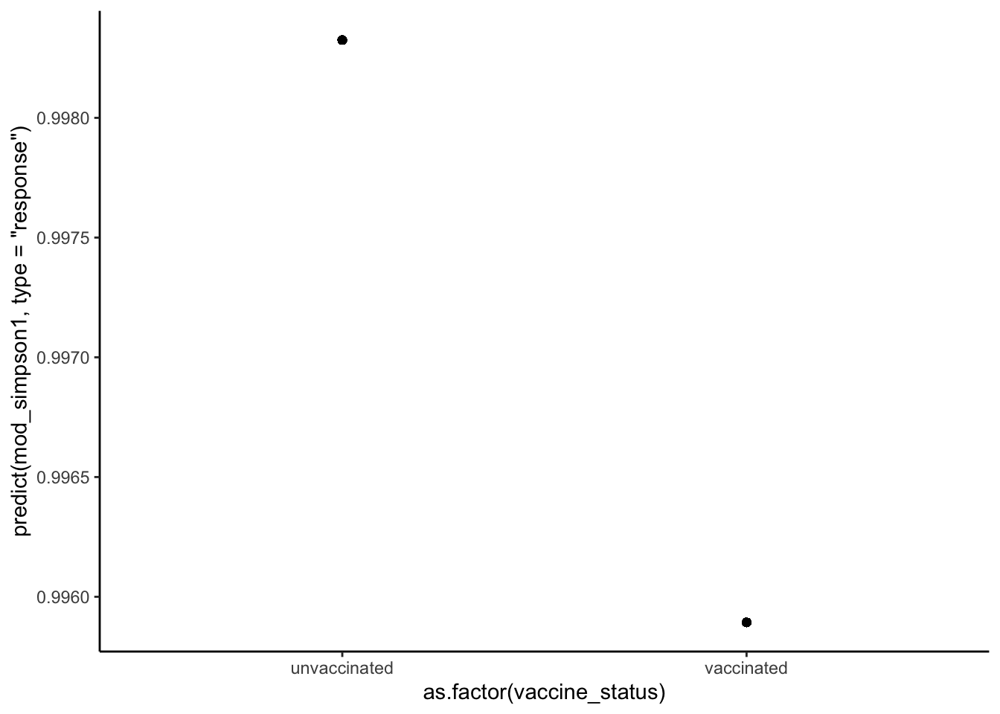
ggplot(simpson_dat, aes(y = predict(mod_simpson2, type = "response"), x= as.factor(vaccine_status))) +
geom_point(aes(color = as.factor(age_group))) +
geom_smooth() +
theme_classic()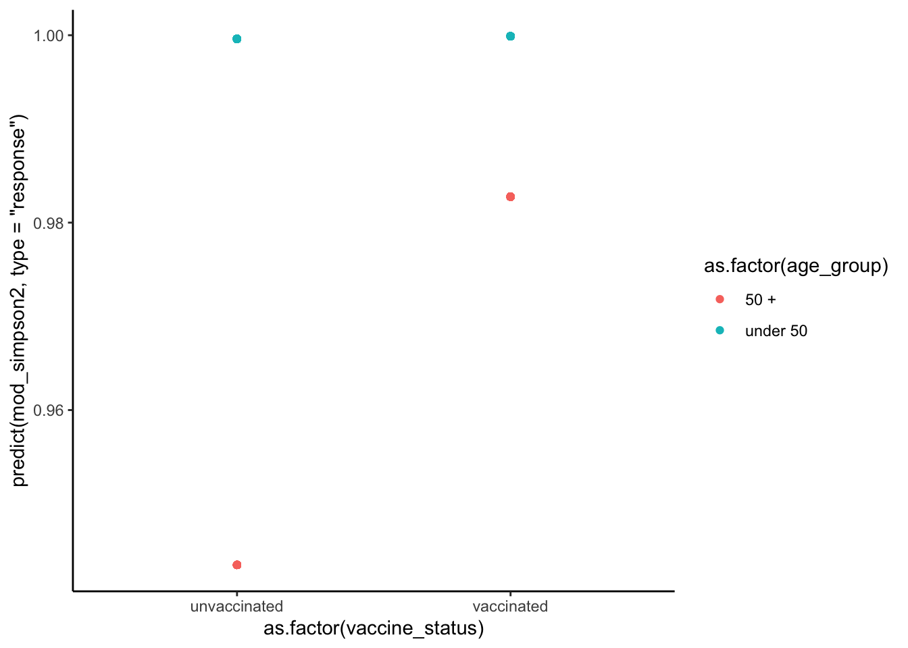
ggplot(simpson_dat, aes(x= as.factor(vaccine_status))) +
geom_bar(aes(fill = outcome)) +
#scale_y_log10() +
scale_y_continuous(labels = scales::percent) +
theme_classic()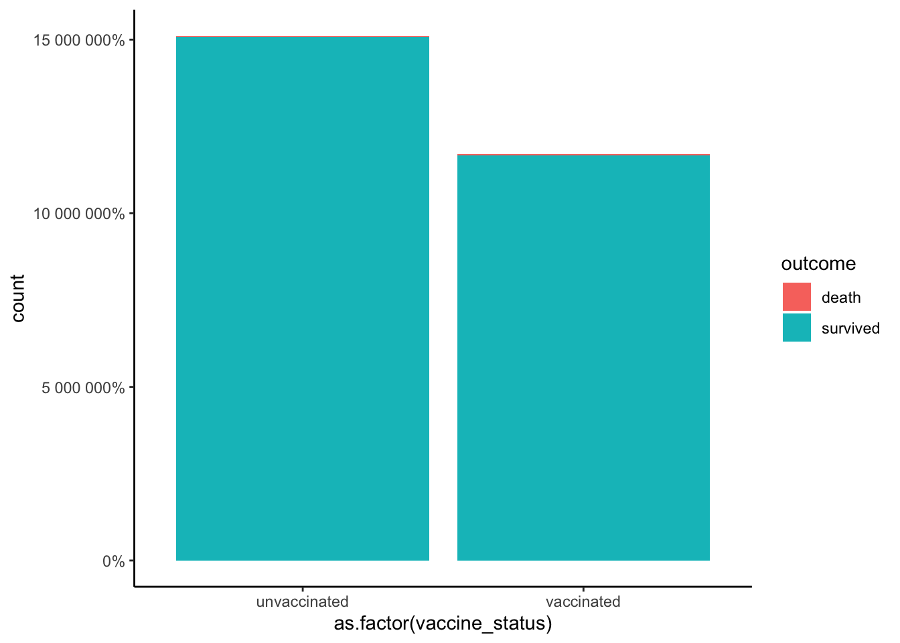
ggplot(simpson_dat, aes(x= as.factor(vaccine_status))) +
geom_bar(aes(fill = outcome), position = "dodge") +
scale_y_log10()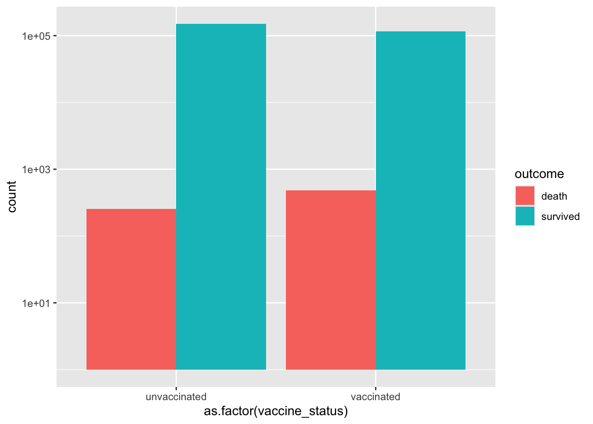
# plot_model(mod_simpson1, type = "pred")
# plot_model(mod_simpson2, type = "pred", terms = c("vaccine_status", "age_group"))data(birthwt)
head(birthwt) low age lwt race smoke ptl ht ui ftv bwt
85 0 19 182 2 0 0 0 1 0 2523
86 0 33 155 3 0 0 0 0 3 2551
87 0 20 105 1 1 0 0 0 1 2557
88 0 21 108 1 1 0 0 1 2 2594
89 0 18 107 1 1 0 0 1 0 2600
91 0 21 124 3 0 0 0 0 0 2622Execute the following code in your computer to explore what the above variables are
help(birthwt)Dimension of the dataset
dim(birthwt)[1] 189 10Which variables are predictors of child’s birth weight?
Let us look at the child’s birth weight vs mother’s smoking status data once again
#Run the model
birthwt_modat <- birthwt %>%
mutate(bwt2 = bwt/1000) %>%
mutate(lwt2 = lwt*0.454)
lm_simple <- lm(bwt2 ~ lwt2, data = birthwt_modat)
#Plot the distribution of uterine irritability
ggplot(birthwt_modat, aes(x = as.factor(smoke), y = bwt2)) +
geom_boxplot() +
geom_dotplot(binaxis='y', stackdir='center', color = "black", fill = "red") +
#stat_summary(fun.data=mean_sdl, fun.args = list(mult=1),
# geom="pointrange", color="red") +
labs(x = "\nMother's Smoking Status", y = "Child's Birth Weight\n") +
scale_x_discrete(labels = c("Non-smoker", "Smoker")) +
theme_classic() +
theme(text = element_text(size = 15))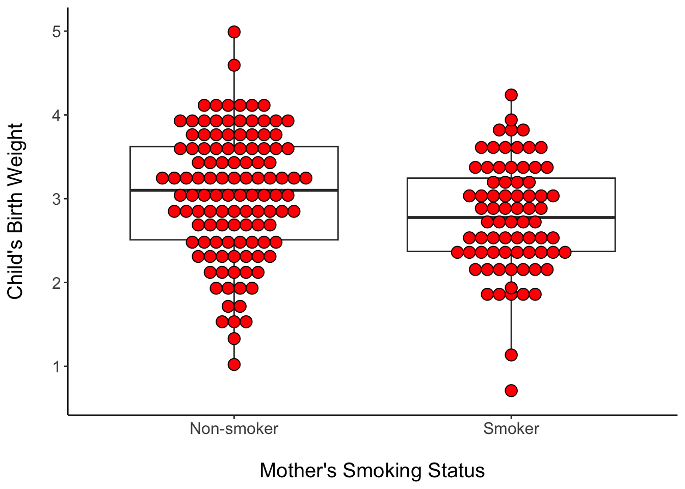
And we also saw that our model was not that good in explaining this.
lm_simple2 <- lm(bwt2 ~ as.factor(smoke), data = birthwt_modat)
ggplot(birthwt_modat, aes(x = predict(lm_simple2), y=bwt2, color = as.factor(smoke))) +
geom_point() +
scale_x_reverse() +
geom_abline(intercept = 0, slope = -1) +
labs(x = "\nPredicted Birth Weight", y = "Actual Birth Weight\n") +
theme_classic() +
theme(text = element_text(size = 18)) +
theme(legend.title = element_blank()) +
scale_color_manual(labels = c("Non-smoker", "Smoker"), values = c("blue", "red")) 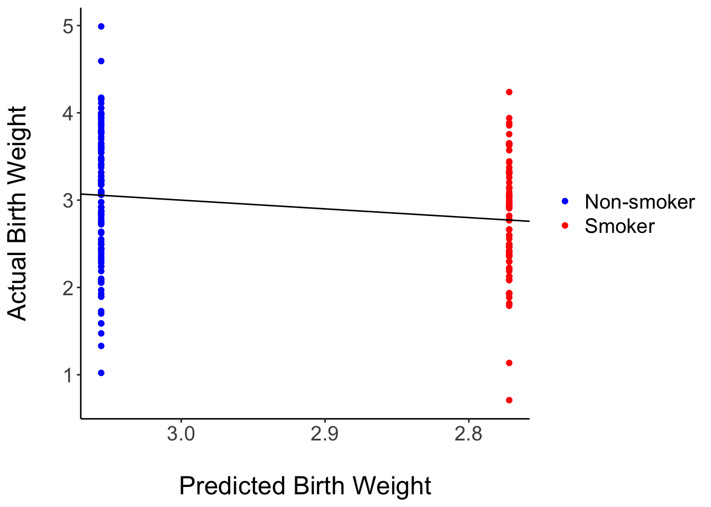
ggplot(birthwt_modat, aes(x = as.factor(smoke), y = age)) +
geom_boxplot() +
geom_dotplot(binaxis='y', stackdir='center', color = "black", fill = "red") +
#stat_summary(fun.data=mean_sdl, fun.args = list(mult=1),
# geom="pointrange", color="red") +
labs(x = "\nMother's Smoking Status", y = "Mother's age (years)\n") +
scale_x_discrete(labels = c("Non-smoker", "Smoker")) +
theme_classic() +
theme(text = element_text(size = 15))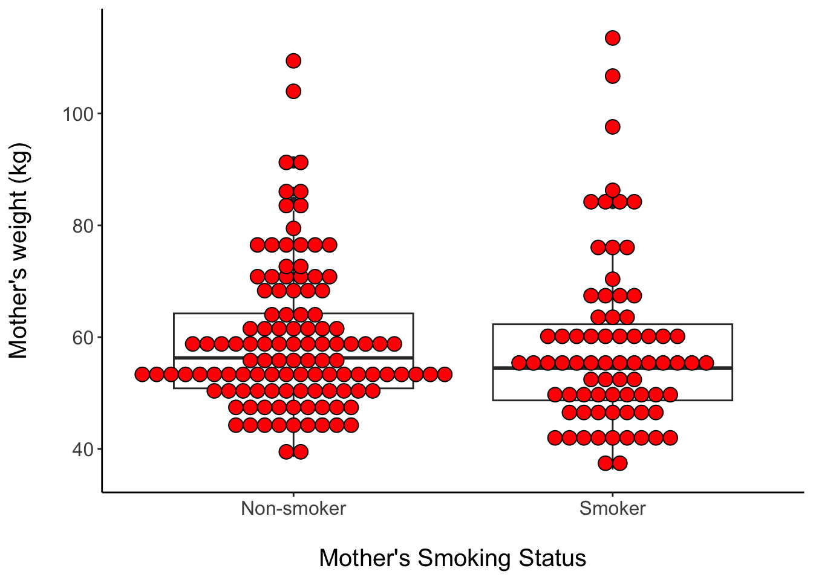
#Let us try another kind of plot
ggplot(birthwt_modat, aes(x = age, fill = as.factor(smoke))) +
geom_histogram() +
labs(x = "Mother's age (years)\n") +
theme_classic() +
theme(text = element_text(size = 15)) +
scale_fill_discrete(labels = c("Non-smoker", "Smoker")) +
theme(legend.title = element_blank())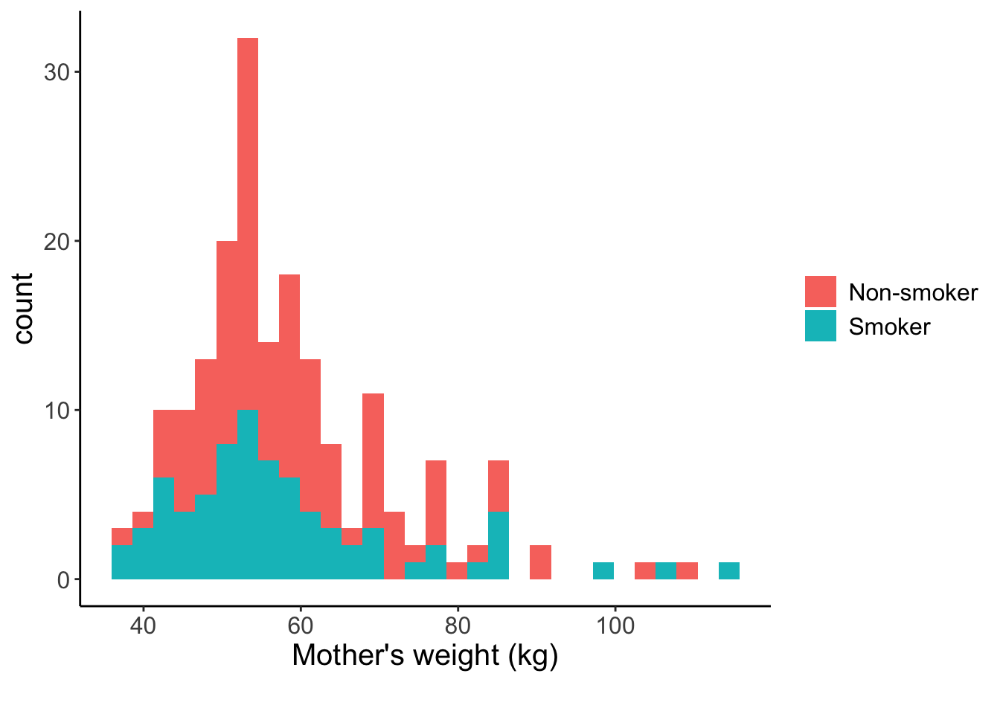
# Density plot
ggplot(birthwt_modat, aes(x = age, color = as.factor(smoke))) +
geom_density() +
labs(x = "Mother's age (years)\n") +
theme_classic() +
theme(text = element_text(size = 15)) +
scale_color_discrete(labels = c("Non-smoker", "Smoker")) +
theme(legend.title = element_blank())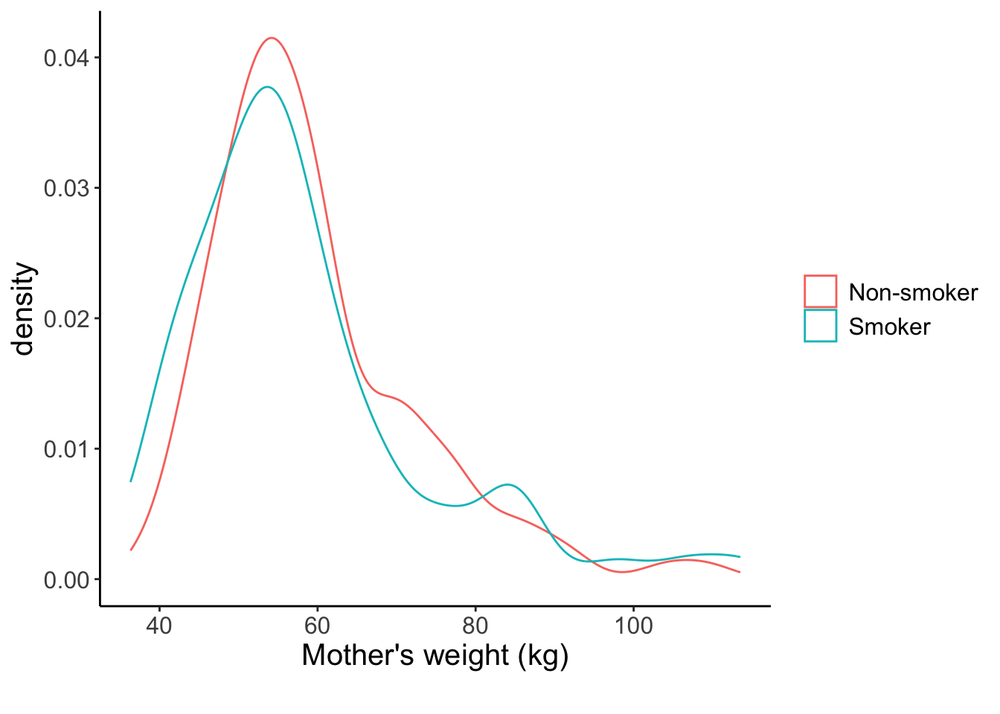
#Plot the distribution of uterine irritability
ggplot(birthwt_modat, aes(x = as.factor(smoke), y = lwt2)) +
geom_boxplot() +
geom_dotplot(binaxis='y', stackdir='center', color = "black", fill = "red") +
#stat_summary(fun.data=mean_sdl, fun.args = list(mult=1),
# geom="pointrange", color="red") +
labs(x = "\nMother's Smoking Status", y = "Mother's weight (kg)\n") +
scale_x_discrete(labels = c("Non-smoker", "Smoker")) +
theme_classic() +
theme(text = element_text(size = 15))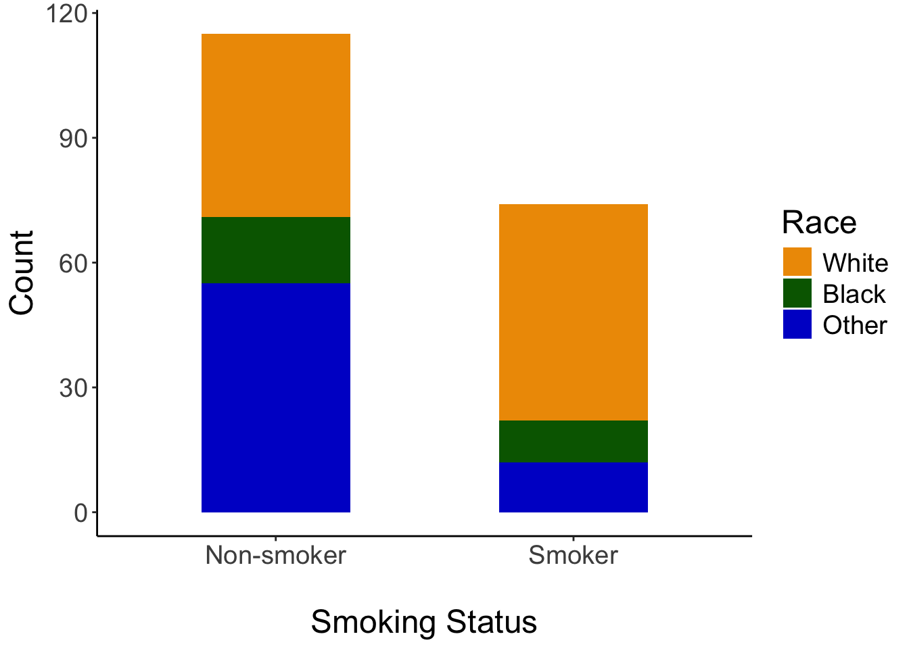
ggplot(birthwt_modat, aes(x = lwt2, fill = as.factor(smoke))) +
geom_histogram() +
labs(x = "Mother's weight (kg)\n") +
theme_classic() +
theme(text = element_text(size = 15)) +
scale_fill_discrete(labels = c("Non-smoker", "Smoker")) +
theme(legend.title = element_blank())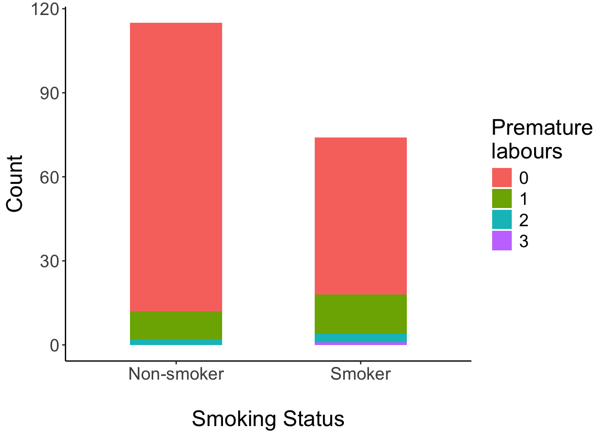
# Density plot
ggplot(birthwt_modat, aes(x = lwt2, color = as.factor(smoke))) +
geom_density() +
labs(x = "Mother's weight (kg)\n") +
theme_classic() +
theme(text = element_text(size = 15)) +
scale_color_discrete(labels = c("Non-smoker", "Smoker")) +
theme(legend.title = element_blank())#Plot the distribution of uterine irritability
ggplot(birthwt_modat %>%
mutate(race = as.factor(race)), aes(as.factor(smoke))) +
geom_bar(aes(fill = race), width = 0.5) +
theme_classic() +
theme(text = element_text(size = 18)) +
labs(x = "\nSmoking Status", y = "Count") +
guides(fill=guide_legend(title="Race")) +
scale_fill_manual(labels = c("1" = "White", "2" = "Black", "3" = "Other"),
values = c("orange2", "darkgreen", "blue3")) +
scale_x_discrete(labels = c("Non-smoker", "Smoker"))#Number of previous premature labours
ggplot(birthwt_modat, aes(as.factor(smoke))) +
geom_bar(aes(fill = as.factor(ptl)), width = 0.5) +
theme_classic() +
theme(text = element_text(size = 18)) +
labs(x = "\nSmoking Status", y = "Count") +
guides(fill=guide_legend(title="Premature \nlabours")) +
#scale_fill_manual(labels = c("1" = "White", "2" = "Black", "3" = "Other"),
# values = c("pink3", "lightgreen", "lightblue")) +
scale_x_discrete(labels = c("Non-smoker", "Smoker"))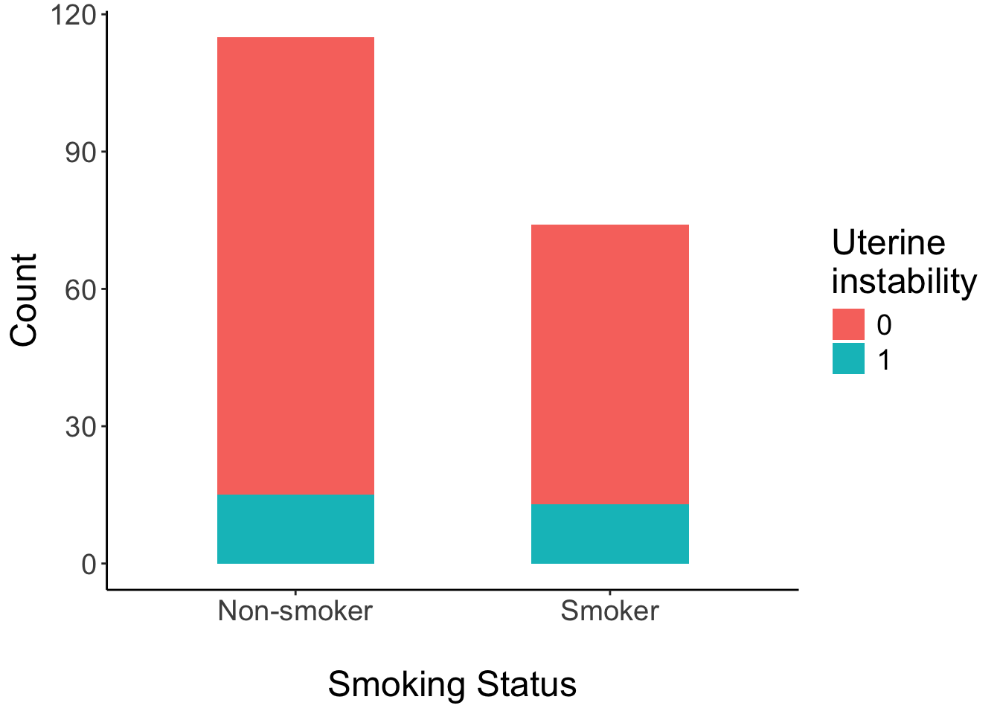
#Hypertension
ggplot(birthwt_modat, aes(as.factor(smoke))) +
geom_bar(aes(fill = as.factor(ht)), width = 0.5) +
theme_classic() +
theme(text = element_text(size = 18)) +
labs(x = "\nSmoking Status", y = "Count") +
guides(fill=guide_legend(title="Hypertension")) +
#scale_fill_manual(labels = c("1" = "White", "2" = "Black", "3" = "Other"),
# values = c("pink3", "lightgreen", "lightblue")) +
scale_x_discrete(labels = c("Non-smoker", "Smoker"))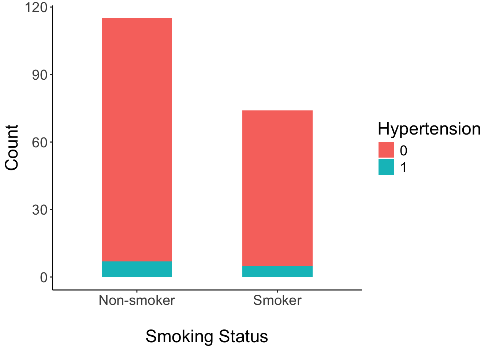
#Uterine instability
ggplot(birthwt_modat, aes(as.factor(smoke))) +
geom_bar(aes(fill = as.factor(ui)), width = 0.5) +
theme_classic() +
theme(text = element_text(size = 18)) +
labs(x = "\nSmoking Status", y = "Count") +
guides(fill=guide_legend(title="Uterine \ninstability")) +
#scale_fill_manual(labels = c("1" = "White", "2" = "Black", "3" = "Other"),
# values = c("pink3", "lightgreen", "lightblue")) +
scale_x_discrete(labels = c("Non-smoker", "Smoker"))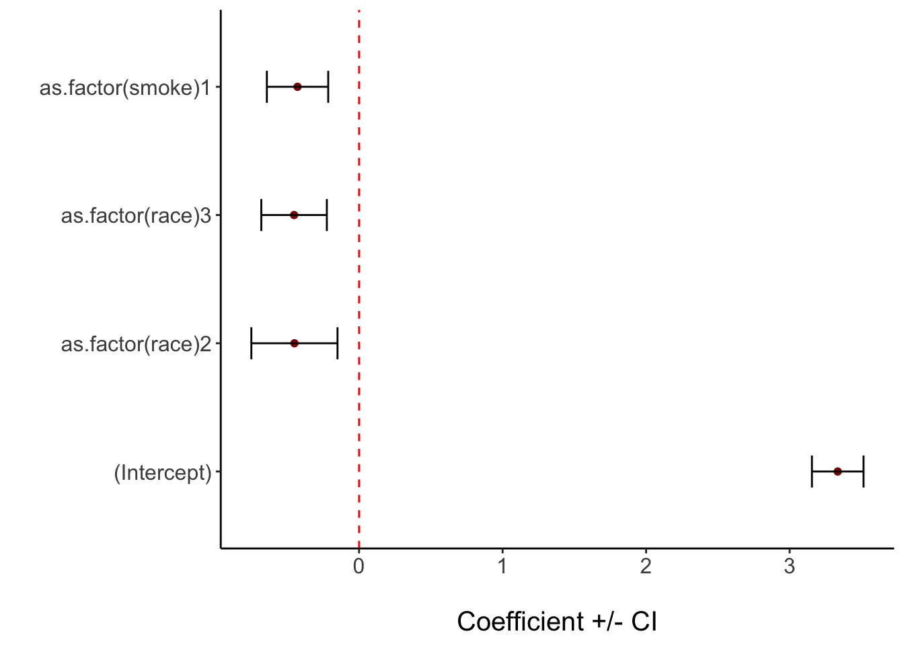
#Number of physian visit
ggplot(birthwt_modat, aes(as.factor(smoke))) +
geom_bar(aes(fill = as.factor(ftv)), width = 0.5) +
theme_classic() +
theme(text = element_text(size = 18)) +
labs(x = "\nSmoking Status", y = "Count") +
guides(fill=guide_legend(title="# Physician \nvisits")) +
#scale_fill_manual(labels = c("1" = "White", "2" = "Black", "3" = "Other"),
# values = c("pink3", "lightgreen", "lightblue")) +
scale_x_discrete(labels = c("Non-smoker", "Smoker"))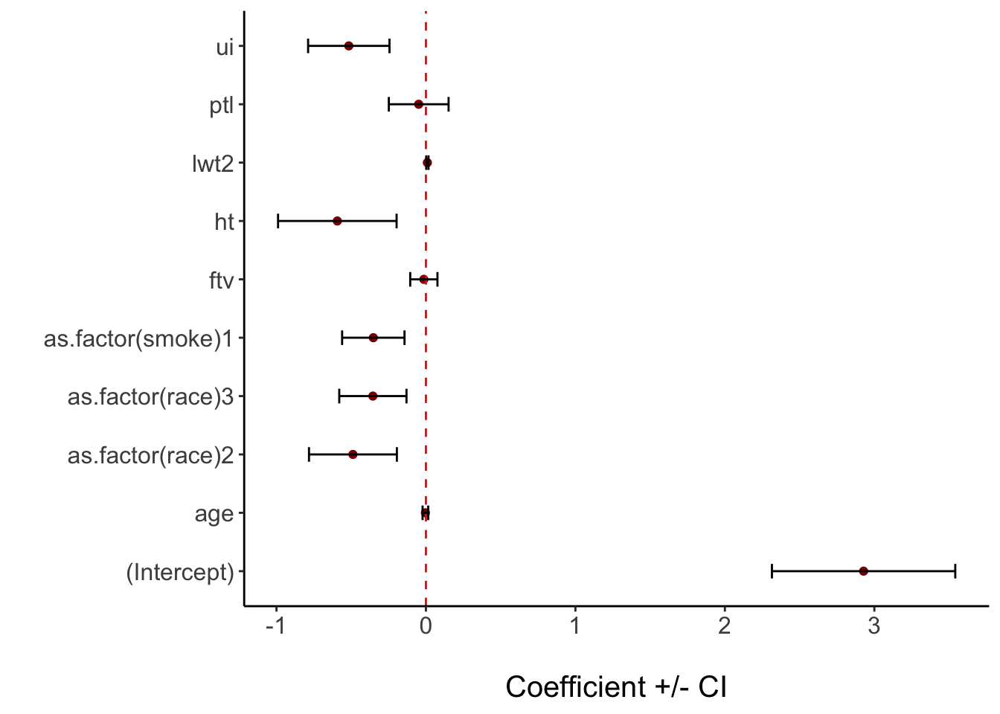
#Step1
lm_multip1 <- lm(bwt2 ~ as.factor(smoke) + as.factor(race), data = birthwt_modat)
#Step2
lm_multip1_tidy <- broom::tidy(lm_multip1)
#Step3
ggplot(lm_multip1_tidy, aes(y = term, x= estimate)) +
geom_point(color = "darkred") +
geom_vline(xintercept = 0, color = "red", linetype = "dashed") +
geom_errorbar(aes(xmin = estimate - 1.96*std.error,
xmax = estimate + 1.96*std.error), width = 0.25,
color = 'black') +
labs(x = "\nCoefficient +/- CI", y = "") +
#scale_y_discrete(labels = c("Intercept", "Mother's Smoking Status")) +
theme_classic() +
theme(text = element_text(size = 15))#Step4
for (i in 1:6){
plot(lm_multip1, i)
}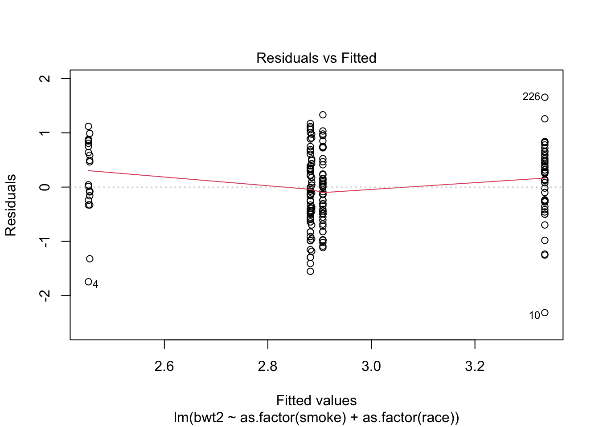
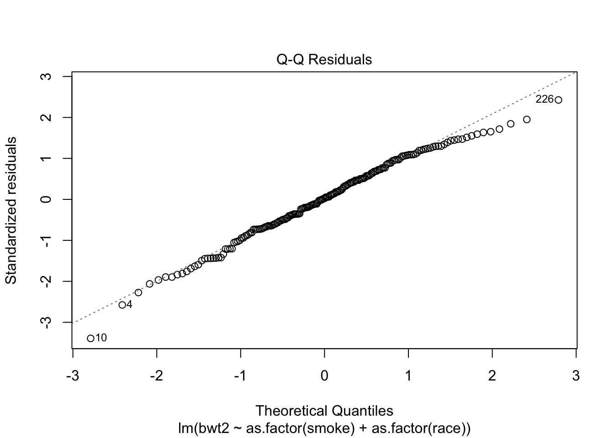
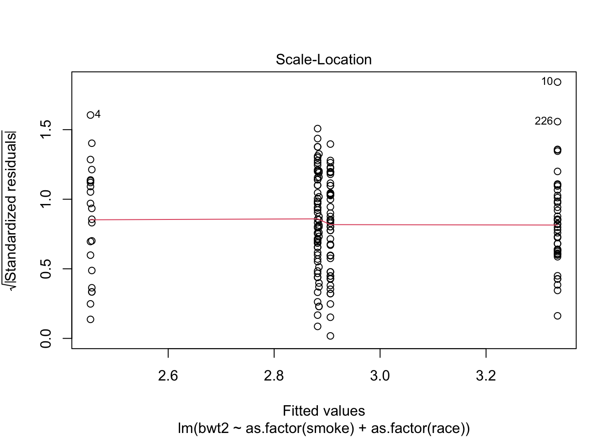
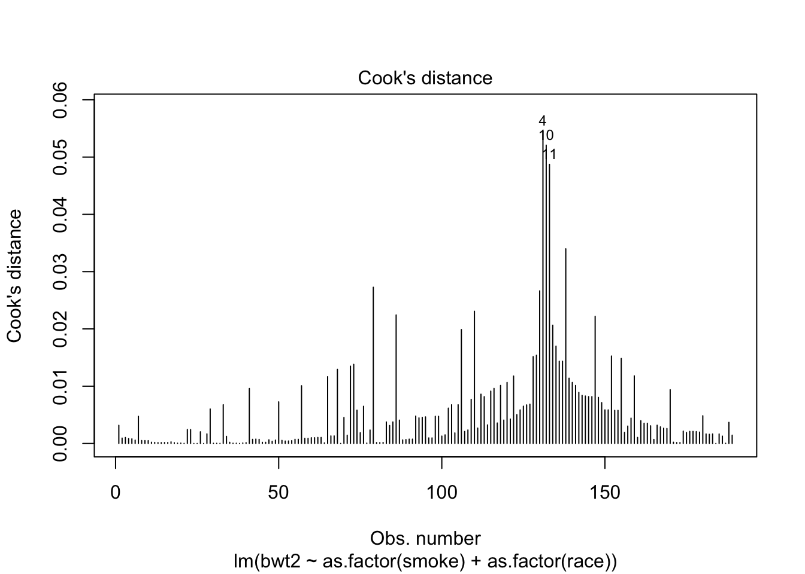
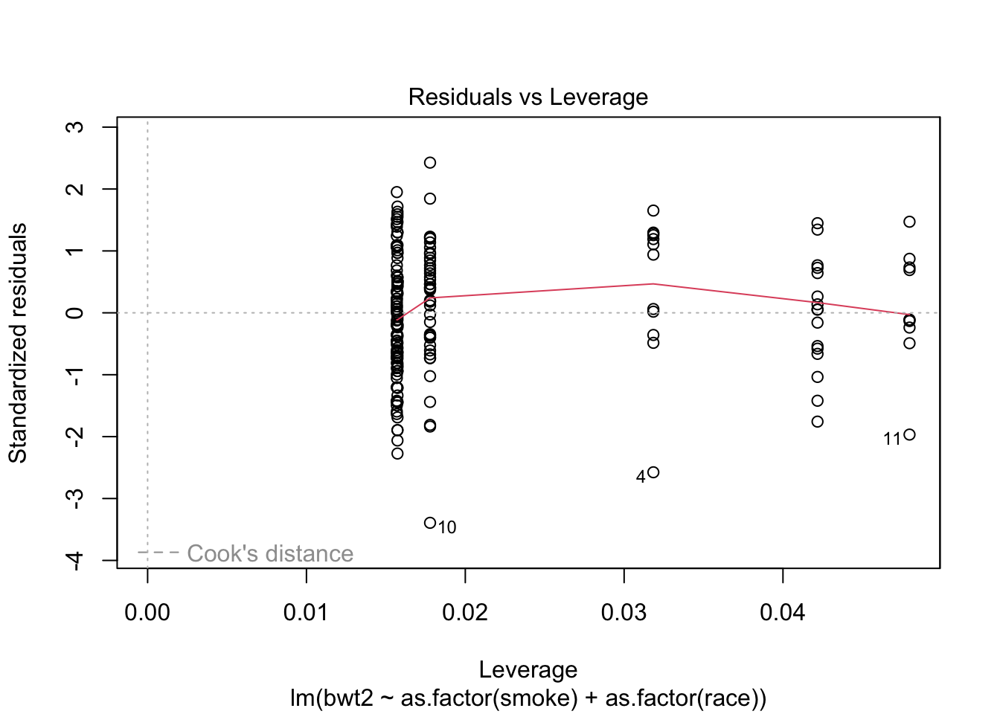
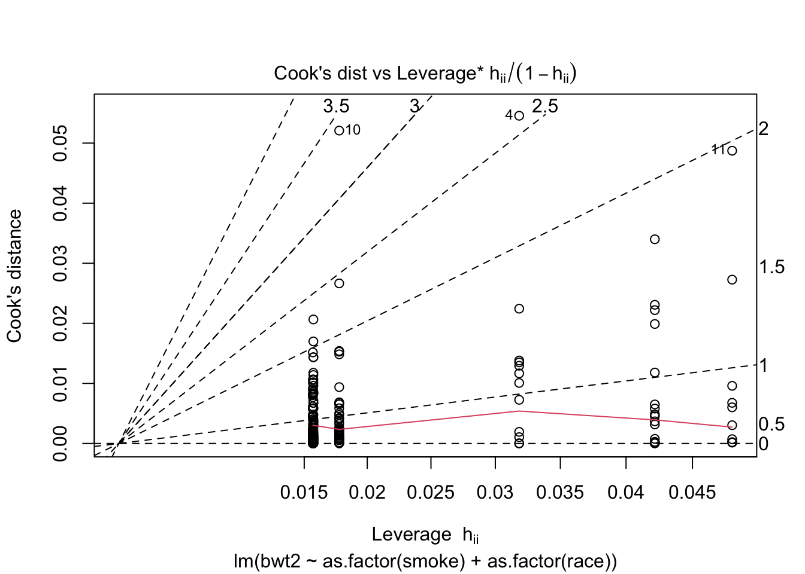
#Step5
ggplot(birthwt_modat, aes(x = predict(lm_multip1), y=bwt2, color = as.factor(smoke))) +
geom_point() +
geom_abline(intercept = 0, slope = 1) +
labs(x = "\nPredicted Birth Weight", y = "Actual Birth Weight\n") +
theme_classic() +
theme(text = element_text(size = 15)) +
geom_hline(aes(yintercept = mean(bwt2)), linetype = "dashed", color = "red") +
scale_color_manual(labels = c("Non-smoker", "Smoker"), values =
c("orange3", "skyblue3")) +
theme(legend.title = element_blank())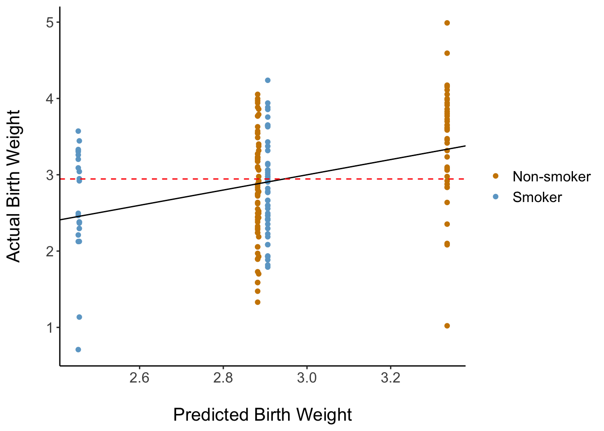
#Step6
summary(lm_multip1)
Call:
lm(formula = bwt2 ~ as.factor(smoke) + as.factor(race), data = birthwt_modat)
Residuals:
Min 1Q Median 3Q Max
-2.31395 -0.44022 0.01578 0.49214 1.65505
Coefficients:
Estimate Std. Error t value Pr(>|t|)
(Intercept) 3.33495 0.09178 36.338 < 2e-16 ***
as.factor(smoke)1 -0.42873 0.10904 -3.932 0.000119 ***
as.factor(race)2 -0.45036 0.15312 -2.941 0.003687 **
as.factor(race)3 -0.45288 0.11648 -3.888 0.000141 ***
---
Signif. codes: 0 '***' 0.001 '**' 0.01 '*' 0.05 '.' 0.1 ' ' 1
Residual standard error: 0.6882 on 185 degrees of freedom
Multiple R-squared: 0.1234, Adjusted R-squared: 0.1092
F-statistic: 8.683 on 3 and 185 DF, p-value: 2.027e-05#Step1
lm_multip2 <- lm(bwt2 ~ as.factor(smoke) + as.factor(race) + age +
lwt2 + ht + ui + ptl + ftv, data = birthwt_modat)
#Step2
lm_multip2_tidy <- broom::tidy(lm_multip2)
#Step3
ggplot(lm_multip2_tidy, aes(y = term, x= estimate)) +
geom_point(color = "darkred") +
geom_vline(xintercept = 0, color = "red", linetype = "dashed") +
geom_errorbar(aes(xmin = estimate - 1.96*std.error,
xmax = estimate + 1.96*std.error), width = 0.25,
color = 'black') +
labs(x = "\nCoefficient +/- CI", y = "") +
#scale_y_discrete(labels = c("Intercept", "Mother's Smoking Status")) +
theme_classic() +
theme(text = element_text(size = 15))#Step4
for (i in 1:6){
plot(lm_multip2, i)
}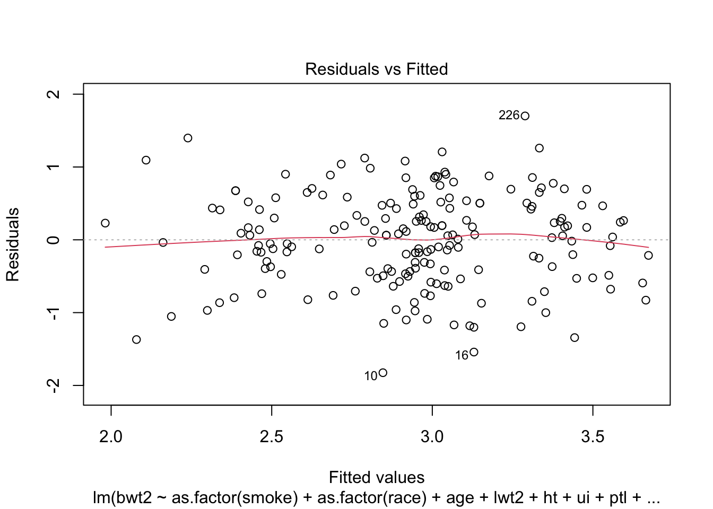
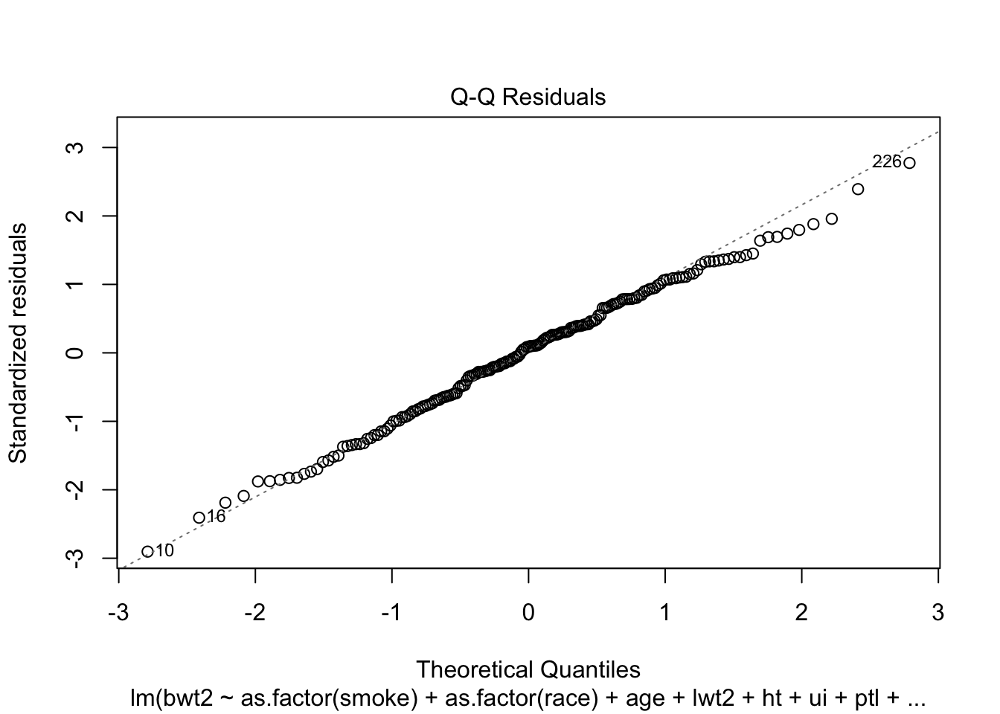
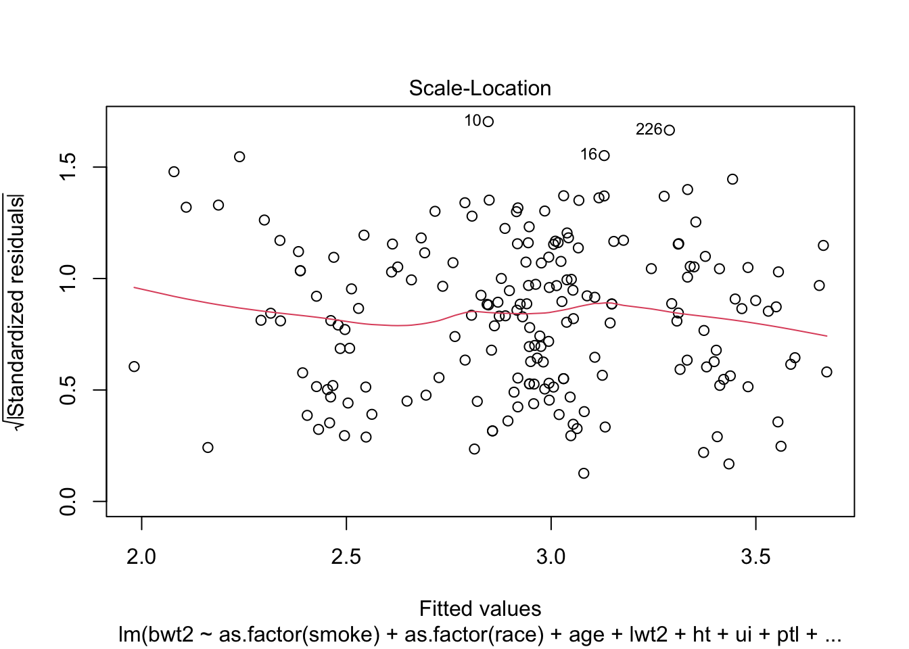
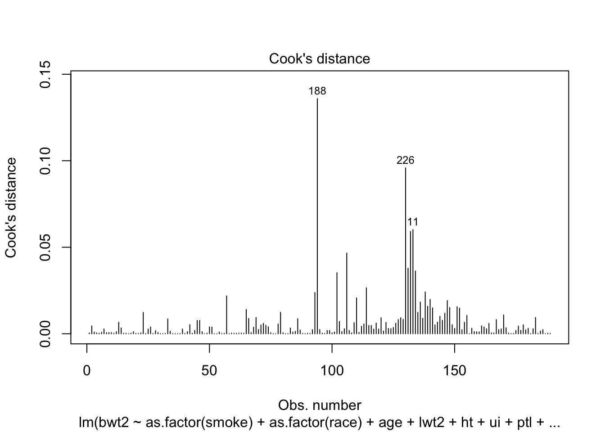
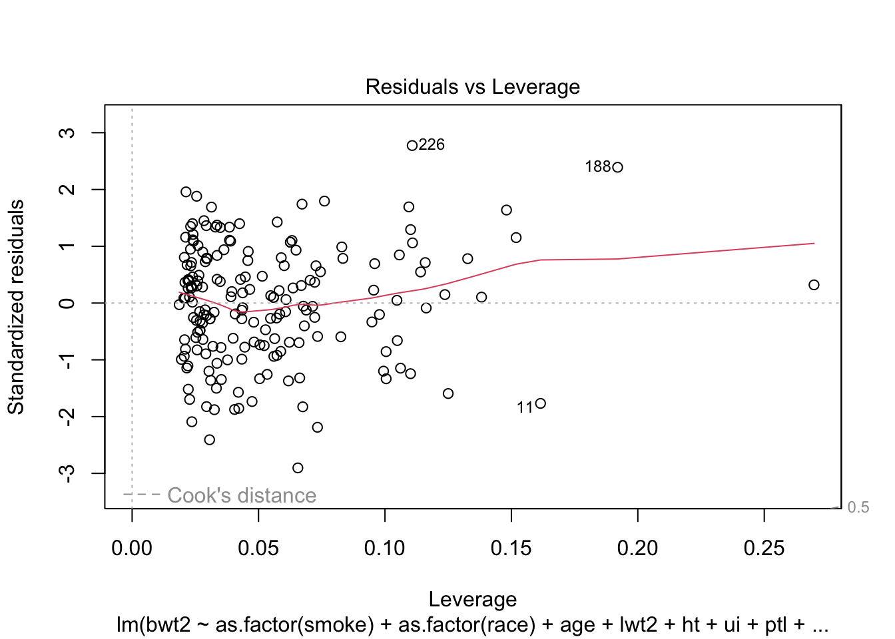
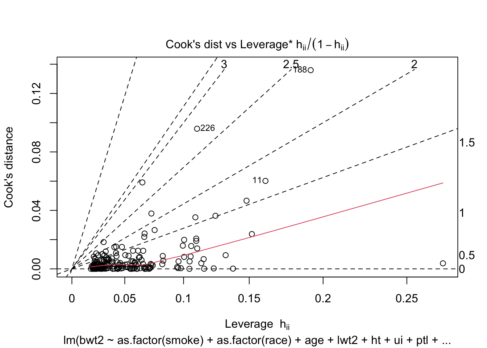
#Step5
ggplot(birthwt_modat, aes(x = predict(lm_multip2), y=bwt2, color = as.factor(smoke))) +
geom_point() +
geom_abline(intercept = 0, slope = 1) +
labs(x = "\nPredicted Birth Weight", y = "Actual Birth Weight\n") +
theme_classic() +
theme(text = element_text(size = 15)) +
geom_hline(aes(yintercept = mean(bwt2)), linetype = 'dashed', color = "red") +
scale_color_manual(labels = c("Non-smoker", "Smoker"), values =
c("orange3", "skyblue3")) +
theme(legend.title = element_blank())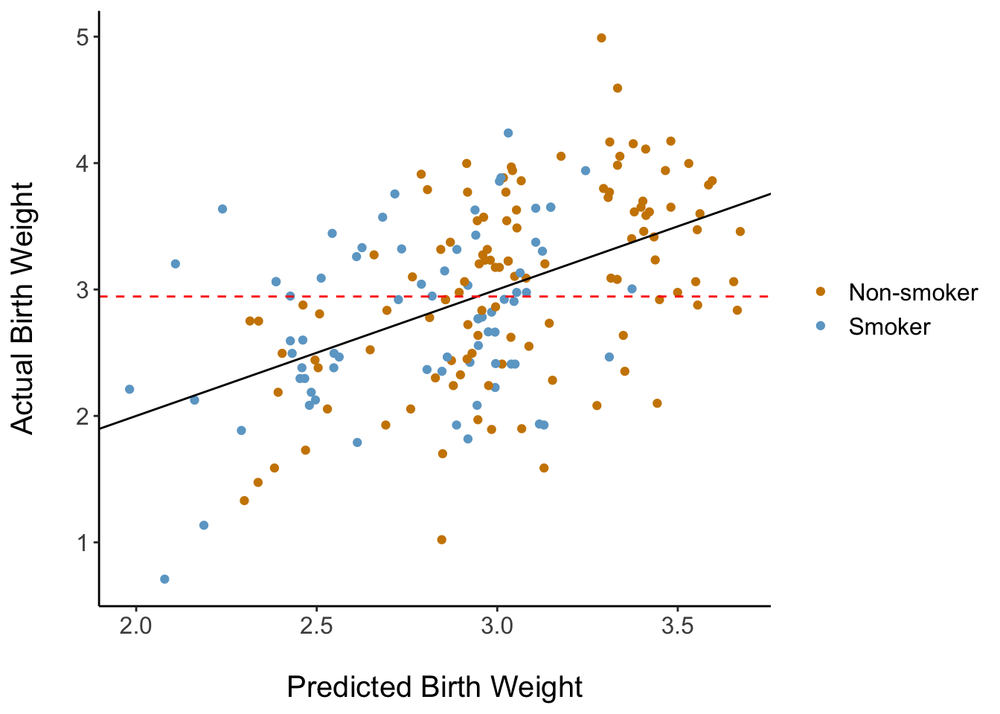
#Step6
summary(lm_multip2)
Call:
lm(formula = bwt2 ~ as.factor(smoke) + as.factor(race) + age +
lwt2 + ht + ui + ptl + ftv, data = birthwt_modat)
Residuals:
Min 1Q Median 3Q Max
-1.82526 -0.43521 0.05591 0.47346 1.70120
Coefficients:
Estimate Std. Error t value Pr(>|t|)
(Intercept) 2.927962 0.312904 9.357 < 2e-16 ***
as.factor(smoke)1 -0.352045 0.106476 -3.306 0.001142 **
as.factor(race)2 -0.488428 0.149985 -3.257 0.001349 **
as.factor(race)3 -0.355077 0.114753 -3.094 0.002290 **
age -0.003570 0.009620 -0.371 0.711012
lwt2 0.009590 0.003823 2.509 0.013007 *
ht -0.592827 0.202321 -2.930 0.003830 **
ui -0.516081 0.138885 -3.716 0.000271 ***
ptl -0.048402 0.101972 -0.475 0.635607
ftv -0.014058 0.046468 -0.303 0.762598
---
Signif. codes: 0 '***' 0.001 '**' 0.01 '*' 0.05 '.' 0.1 ' ' 1
Residual standard error: 0.6503 on 179 degrees of freedom
Multiple R-squared: 0.2427, Adjusted R-squared: 0.2047
F-statistic: 6.376 on 9 and 179 DF, p-value: 7.891e-08test_model <- anova(lm_multip1, lm_multip2)
summary(test_model) Res.Df RSS Df Sum of Sq F
Min. :179.0 Min. :75.70 Min. :6 Min. :11.93 Min. :4.701
1st Qu.:180.5 1st Qu.:78.68 1st Qu.:6 1st Qu.:11.93 1st Qu.:4.701
Median :182.0 Median :81.67 Median :6 Median :11.93 Median :4.701
Mean :182.0 Mean :81.67 Mean :6 Mean :11.93 Mean :4.701
3rd Qu.:183.5 3rd Qu.:84.65 3rd Qu.:6 3rd Qu.:11.93 3rd Qu.:4.701
Max. :185.0 Max. :87.63 Max. :6 Max. :11.93 Max. :4.701
NA's :1 NA's :1 NA's :1
Pr(>F)
Min. :0.0001811
1st Qu.:0.0001811
Median :0.0001811
Mean :0.0001811
3rd Qu.:0.0001811
Max. :0.0001811
NA's :1 test_model_aic <- AIC(lm_multip1, lm_multip2)
test_model_bic <- BIC(lm_multip1, lm_multip2)
test_model_lr <- lrtest(lm_multip1, lm_multip2)